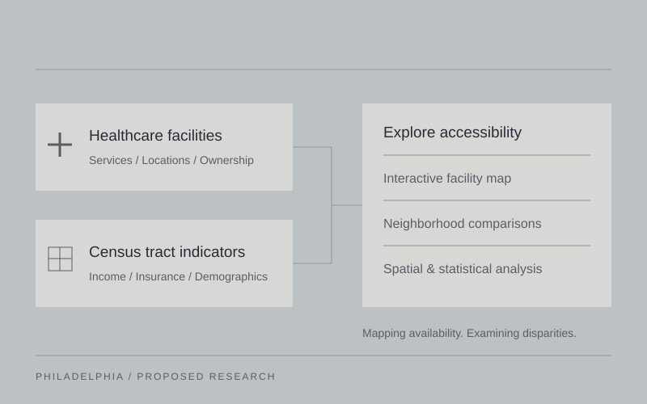

In progress / Health accessibility
Mapping Health Accessibility in Philadelphia and Its Association with Socioeconomic Indicators
This project proposes an interactive web-based GIS platform to map Philadelphia's healthcare infrastructure and examine its relationship with neighborhood socioeconomic conditions. It aims to help residents locate relevant services while providing a way to explore spatial disparities in healthcare availability and access.